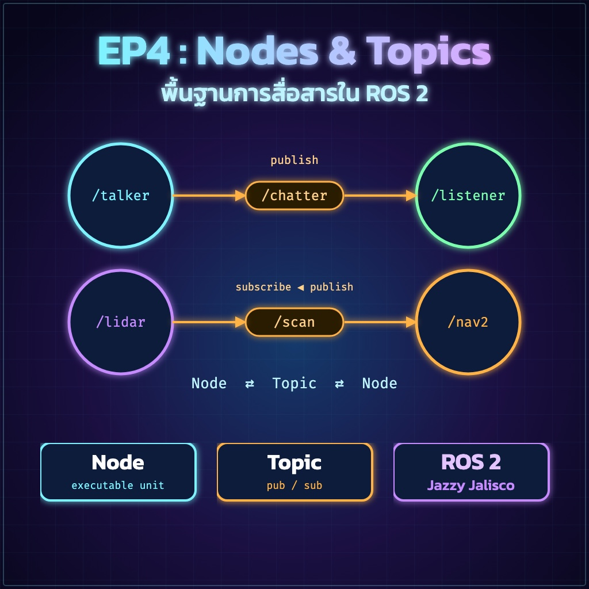
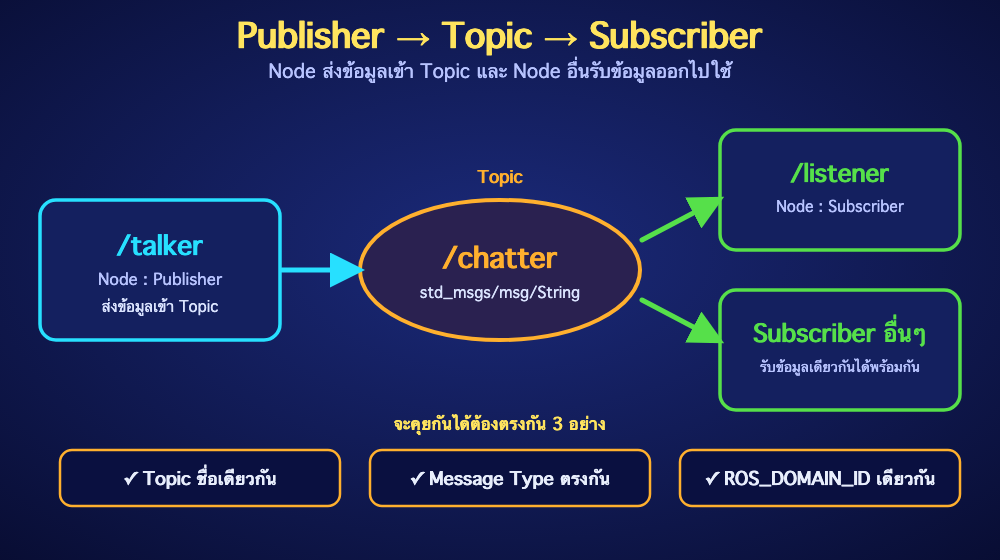

ย้อนกลับ

EP4
พื้นฐานการสื่อสาร Nodes และ Topics
"ให้โปรแกรมย่อยของหุ่นยนต์คุยกันได้ผ่าน Topic"
🎯 จุดประสงค์การเรียนรู้
- อธิบายหน้าที่ของ Node, Topic, Publisher, Subscriber และ Message Type ได้
- ใช้คำสั่ง
ros2 node, ros2 topic และ rqt_graph เพื่อตรวจสอบระบบได้
- ส่งและรับข้อความผ่าน Topic ด้วยคำสั่ง Terminal ได้
- ตั้งค่า
ROS_DOMAIN_ID สำหรับการเรียนในห้องที่มีหลายทีมได้
📚 1. แนวคิดพื้นฐาน
Node
โปรแกรมย่อยที่รับผิดชอบงานหนึ่งอย่าง เช่น อ่าน LiDAR หรือควบคุมมอเตอร์
Topic
ช่องทางส่งข้อมูลแบบต่อเนื่อง เหมาะกับข้อมูลเซนเซอร์และคำสั่งความเร็ว
Publisher
Node ฝั่งส่งข้อมูลเข้า Topic
Subscriber
Node ฝั่งรับข้อมูลจาก Topic ผ่าน Callback
Message Type
รูปแบบข้อมูลที่ทั้งผู้ส่งและผู้รับต้องใช้ตรงกัน
QoS
กติกาการส่งข้อมูล เช่น ความน่าเชื่อถือและจำนวนข้อมูลที่เก็บในคิว

ตัวอย่างการไหลของข้อมูล
camera_node → /camera/image_raw (sensor_msgs/msg/Image) → vision_node
teleop_node → /cmd_vel (geometry_msgs/msg/Twist) → motor_controller
💻 2. เตรียม Terminal
ทุก Terminal ใหม่ต้อง Source ROS 2 ก่อน หากได้เพิ่มคำสั่งไว้ใน ~/.bashrc แล้ว ขั้นตอนนี้จะทำอัตโนมัติ
# ROS 2 Jazzy บน Ubuntu 24.04
source /opt/ros/jazzy/setup.bash
# ตรวจสอบเวอร์ชัน Distribution
echo $ROS_DISTRO
# Expected: jazzy
ใช้ Humble ให้เปลี่ยน jazzy เป็น humble
⚠️ อย่านำ Environment ของ Humble และ Jazzy มา Source ซ้อนกันใน Terminal เดียว
⌨️ 3. ทดลองระบบ Talker/Listener
Terminal 1 — Publisher ตัวอย่าง
source /opt/ros/jazzy/setup.bash
ros2 run demo_nodes_cpp talker
Terminal 2 — Subscriber ตัวอย่าง
source /opt/ros/jazzy/setup.bash
ros2 run demo_nodes_py listener
✅ Expected Result
Terminal 1 แสดงข้อความ Publishing และ Terminal 2 แสดง I heard พร้อมลำดับข้อความที่เพิ่มขึ้นต่อเนื่อง
🔍 4. ตรวจสอบ Node
# แสดง Node ทั้งหมด
ros2 node list
# ดูรายละเอียด Node
ros2 node info /talker
ros2 node info /listener
ในผลลัพธ์ของ ros2 node info ให้สังเกต Subscribers, Publishers, Service Servers, Service Clients และ Action Servers/Clients
🔍 5. ตรวจสอบ Topic
# แสดง Topic ทั้งหมด
ros2 topic list
# แสดง Topic พร้อม Message Type
ros2 topic list -t
# ดูรายละเอียดการเชื่อมต่อ
ros2 topic info /chatter --verbose
# ดูข้อมูลจริง
ros2 topic echo /chatter
# ดูอัตราการส่งข้อมูล
ros2 topic hz /chatter
# ดูแบนด์วิดท์โดยประมาณ
ros2 topic bw /chatter
📦 6. ตรวจสอบ Message Type
# ตรวจชนิดข้อมูลของ Topic
ros2 topic type /chatter
# ดูโครงสร้าง Message
ros2 interface show std_msgs/msg/String
# ค้นหารายการ Interface
ros2 interface list
| Message Type | เหมาะกับ | ฟิลด์สำคัญ |
|---|
std_msgs/msg/String | ข้อความทดลอง | data |
std_msgs/msg/Float32 | ค่าอุณหภูมิ | data |
geometry_msgs/msg/Twist | คำสั่งความเร็ว | linear, angular |
sensor_msgs/msg/LaserScan | LiDAR 2D | ranges, angle_min, angle_increment |
🧪 7. Publish ข้อมูลจาก Terminal
ส่งข้อความหนึ่งครั้ง
ros2 topic pub --once /class_message std_msgs/msg/String "{data: 'Hello ROS 2 Jazzy'}"
ส่งค่าอุณหภูมิที่ 1 Hz
ros2 topic pub --rate 1 /temperature std_msgs/msg/Float32 "{data: 28.5}"
ส่งคำสั่งให้หุ่นยนต์เดินหน้า
ros2 topic pub --rate 10 /cmd_vel geometry_msgs/msg/Twist "{linear: {x: 0.2, y: 0.0, z: 0.0}, angular: {x: 0.0, y: 0.0, z: 0.0}}"
⚠️ ความปลอดภัย
ก่อนส่ง /cmd_vel ให้ยกล้อหุ่นยนต์พ้นพื้นหรือเตรียมปุ่มหยุดฉุกเฉิน เมื่อทดสอบเสร็จให้กด Ctrl+C และส่งค่าความเร็วศูนย์หาก Controller ไม่หยุดเอง
🧪 LAB 4.1 — Temperature Topic
โจทย์: สร้าง Publisher จาก Terminal ที่ส่งอุณหภูมิ 30.0°C ไปยัง /temperature ด้วย std_msgs/msg/Float32 ที่ 1 Hz
- เปิด Terminal 1 แล้วใช้
ros2 topic pub
- เปิด Terminal 2 แล้วใช้
ros2 topic echo /temperature
- ตรวจอัตราด้วย
ros2 topic hz /temperature
- ตรวจชนิดด้วย
ros2 topic type /temperature
เกณฑ์ผ่าน: เห็น data: 30.0 ทุกประมาณ 1 วินาที และชนิดข้อมูลตรงตามโจทย์
🧪 LAB 4.2 — สำรวจระบบ
ขณะ talker และ listener ทำงาน ให้บันทึกผลจากคำสั่งต่อไปนี้
ros2 node listros2 topic list -tros2 node info /talkerros2 topic info /chatter --verbose
วาดแผนภาพ Node → Topic → Node และระบุ Message Type กำกับ
🌐 8. การสื่อสารหลายเครื่อง
เครื่องต้องอยู่ในเครือข่ายที่อนุญาต multicast/UDP และใช้ ROS_DOMAIN_ID เดียวกัน
# ตัวอย่างเลือก Domain 25 — ทำเหมือนกันทุกเครื่องในทีม
export ROS_DOMAIN_ID=25
# บันทึกถาวรสำหรับผู้ใช้ปัจจุบัน
echo "export ROS_DOMAIN_ID=25" >> ~/.bashrc
source ~/.bashrc
# ตรวจสอบ
echo $ROS_DOMAIN_ID
เครือข่ายองค์กรหรือ Guest Wi-Fi อาจปิด multicast
ถ้าไม่ค้นพบกัน ให้ทดสอบบนเราเตอร์/LAN เดียวกัน ตรวจ Firewall และตรวจว่า ROS_DOMAIN_ID ตรงกันก่อน
⚠️ 9. Common Problems
| อาการ | ตรวจสอบ | แนวทางแก้ |
|---|
ros2: command not found | echo $ROS_DISTRO | Source /opt/ros/jazzy/setup.bash |
ไม่เห็น Topic ของอีกเครื่อง | Domain, Network, Firewall | ใช้ Domain เดียวกันและทดสอบ LAN ที่รองรับ multicast |
Topic ชื่อเดียวกันแต่คุยไม่ได้ | ros2 topic list -t | ตรวจ Message Type และ QoS ให้เข้ากัน |
ข้อมูลเร็วเกินไป | ros2 topic hz | ลด publish rate หรือออกแบบ QoS ให้เหมาะสม |